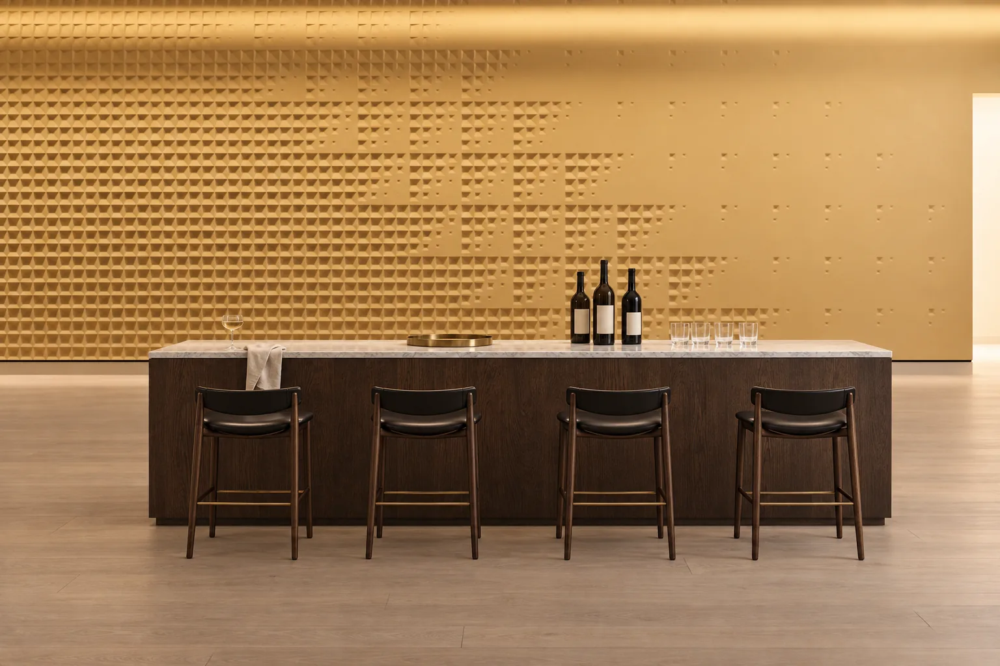
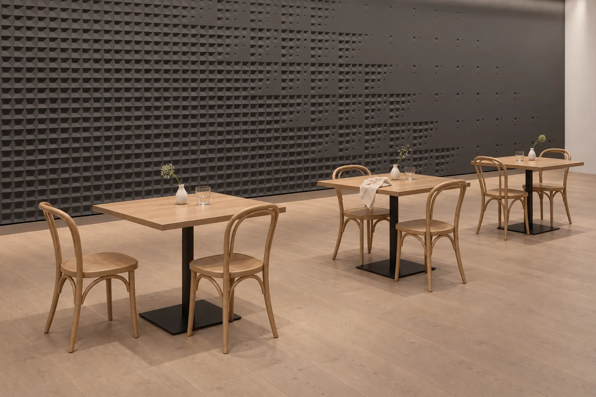

Atölye Tasarımları
Accelerando
Boyutu duvar boyunca kademeli olarak değişen hücrelerden bir alan çizdik.





Yakından
- Malzeme
- Lumina PMAG™ (polimer modifiye kompozit alçı)
- Yüzey
- Boyaya hazır ya da artizan finish ile
- Derz
- 1,5 mm
Çizim
Tasarımın kalıpları ve duvardaki dizilişi. Kalıp siparişinizle hazırlanır; dökümden önce ana modeli siz onaylarsınız.